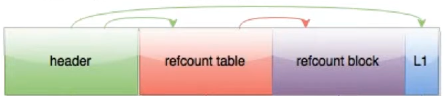
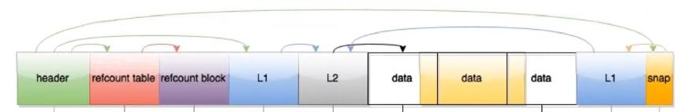
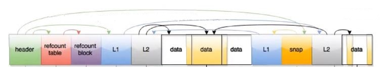
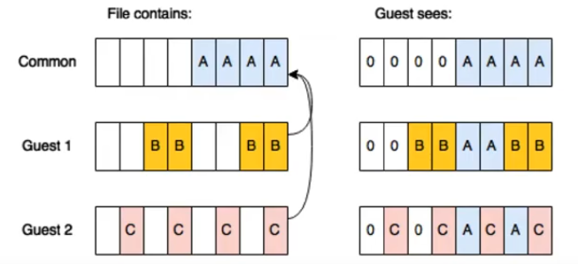
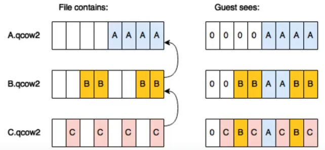
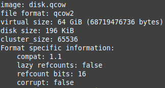
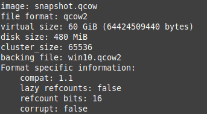
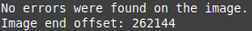
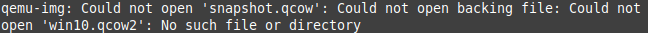
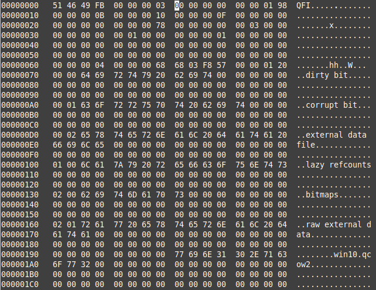

We can use QEMU in two basic operating modes:
- full system emulation- runs standard full system virtual machine including all the hardware (CPU, RAM, drives, ethernet controller, sound card and others).
- user mode emulation- can launch processes compiled for one CPU on another CPU. It supports emulation of ARM, PowerPC, SPARC, x86, x86-64 and more (VirtualBox or VMWare Player/Workstation are not emulators and are designed only for x86, x86-64 processors).
QEMU can work independently but mostly is used with KVM (Kernel-based Virtual Machine) or Xen hypervisors / accelerators on Linux systems what makes the performance practically like on a physical machine.
The QEMU topic is worth mentioning as it’s not only low-end Linux community virtualization software. It looks that Virtualization Station hypervisor offered by QNAP on NAS servers is based on QEMU, and it’s definitely not a dead project.
There are a few file formats representing virtual disks working with QEMU:
raw, qcow2, qcow, luks, vdi, vmdk, vhd/x and others.
Qcow2 is the basic and newest file format which takes all useful advantages of QEMU. After downloading and installing qemu on Windows we can start using basic console tool to manage images which is qemu-img (https://www.qemu.org/download).
qemu-img command – QEMU disk image utility. Never use qemu-img to modify images in use by a running virtual machine or any other process. Machine must be in shutdown state to use qemu-img command.
It is the standard way of working with QEMU images on Windows so only these commands are presented.
This is how the structures look like after creating new qcow2 file:  qemu-img create -f qcow2 disk.qcow 64G
The above command will create a qcow2 file named ‘disk.qcow’ with 64GB maximum size.
All images have a 2-level refcount table, describing the usage of each host cluster and also L1/L2 table, describing the mapping of each guest cluster (with no data mapped, L2 is omitted). The L1 table is an array of file offsets to L2 tables, and each L2 table is an array of file offsets to clusters.
After adding some data:
 QEMU naturally offers snapshots support and we can divide them into internal and external
snapshots.
QEMU naturally offers snapshots support and we can divide them into internal and external
snapshots.
Internal snapshots
After creating an internal snapshot:
 .. and adding some data to it.
 qemu-img snapshot -c one disk.qcow
The above command will create an internal snapshot tagged ‘one’ in ‘disk.qcow’ file.
qemu-img snapshot -l disk.qcow
The above command will list all internal snapshots in ‘disk.qcow’ file.
qemu-img snapshot -d one disk.qcow
The above command will delete an internal snapshot tagged ‘one’ in ‘disk.qcow’ file.
Internal snapshots can be easily managed by libvirt (open-source API, daemon and management tool for managing platform virtualization). There is also GUI called Virt-Manager. Both are developed by Red Hat Inc. Internal snapshots are all independent of each other. Deleting any snapshots will cause that all snapshots left are still completely independent. Any notion of a snapshot hierarchy is really just metadata. Internal snapshots can be taken live or on turned off VM.
To summarize, if we decide to use internal snapshots let’s stay with libvirt and Virt Manager, it will also allow to use live snapshots.
External snapshots
External snapshots usage can be a bit tricky, even libvirt suggests to manage them manually using qemu-img command tool.
qemu-img create -f qcow2 -b disk.qcow snapshot.qcow
The above command will create new file ‘snapshot.qcow in qcow2 format and set ‘disk.qcow’ as a backing file for it. Now VM should be started from snapshot.qcow file and it will work in read-write mode, disk.qcow will be only in read-only mode. Running VM from disk.qcow can damage the snapshot!
More than one guest can use the same backing file:
 Two snapshots chain with the base file:

Deleting a snapshot
Let’s imagine “base ← snap1 ← snap2 ← snap3 ← active layer” chain where we want to get rid of ‘snap2’ snapshot. It can be done by pulling ‘snap1’ into ‘snap2’ or committing ‘snap2’ into ‘snap1’. It looks blockpull can be managed mainly with libvirt.Standard way which works with “qemu-img” tool:
qemu-img commit -f qcow2 snapshot.qcow
The above command will commit all changes from ‘snapshot.qcow’ to its base file. While focusing on external snapshots managed with qemu-img tool, we need first to commit snapshot with the base file and then we can safely delete it. Using older snapshots in chain or just the base file will damage all children snapshots.
The qemu-img convert command can do conversion between multiple formats, including qcow2, qed, raw, vdi, vhd/x, and vmdk.
qemu-img convert -f qcow2 -O vhdx disk.qcow disk.vhdx
The above command will convert disk.qcow file in qcow2 format to vhdx format and name it disk.vhdx. -f is optional as qemu will try to recognize source file format.
This can be used also for committing the chain- passing the snapshot as the source file will create new file merging all backing chain into one standalone file, i.e.:
qemu-img convert -f qcow2 -O qcow2 snapshot.qcow disk_complete.qcow
Other useful commands
qemu-img info disk.qcow – shows the main information about the file disk.qcow.  When passing the snapshot file we get info about which file is the backing file:
 qemu-img check disk.qcow – checks the file disk.qcow for any errors.  When checking the snapshot file it will check whole backing chain, when any file is missing we get an error:
 Sector 0:
 Above sector 0 comes from snapshot file, we can notice at 0x198 offset information about the backing file which is win10.qcow2.
qemu-system-x86_64 -cdrom win10.iso -enable-kvm -m 2048 -smp 2 -drive file=disk.qcow,format=qcow2
Above command will start VM on x86_64 hosts:
-cdrom win10.iso - use win10.iso as cdrom device.
-enable-kvm – enable KVM acceleration (Linux),
-m 2048 – use 2048MB of RAM,
-smp 2 – use 2 cores/threads,
-drive file=disk.qcow,format=qcow2 – use disk.qcow virtual drive in qcow2 format.
What happens when we delete a VMware or VirtualBox snapshot?
VirtualBox (from Oracle VirtualBox site):
If you later delete a snapshot in order to free disk space, for each disk attachment, one of the differencing images becomes obsolete. In this case, the differencing image of the disk attachment cannot simply be deleted. Instead, Oracle VM VirtualBox needs to look at each sector of the differencing image and needs to copy it back into its parent. This is called "merging" images and can be a potentially lengthy process, depending on how large the differencing image is. It can also temporarily need a considerable amount of extra disk space, before the differencing image obsoleted by the merge operation is deleted.VMWare (from VMWare site):
Deleting Snapshots
Deleting a snapshot removes the snapshot from the Snapshot Manager. The VMware snapshot files are consolidated and written to the parent snapshot disk and merge with the virtual machine base disk.Deleting a snapshot does not change the virtual machine or other snapshots. Deleting a snapshot consolidates the changes between snapshots and previous disk states and writes all the data from the delta disk that contains the information about the deleted snapshot to the parent disk. When you delete the base parent snapshot, all changes merge with the base virtual machine disk.
Delete
Use the Delete option to remove a single parent or child snapshot from the snapshot tree. Delete writes disk changes that occur between the state of the snapshot and the previous disk state to the parent snapshot.Note: Deleting a single snapshot preserves the current state of the virtual machine and does not affect any other snapshot.
You can also use the Delete option to remove a corrupt snapshot and its files from an abandoned branch of the snapshot tree without merging them with the parent snapshot.
Delete All
Use the Delete All option to delete all snapshots from the Snapshot Manager. Delete all consolidates and writes the changes that occur between snapshots and the previous delta disk states to the base parent disk and merges them with the base virtual machine disk.Delete all snapshots operation will commit every snapshot of the chain directly to the Base Disk(s) of the virtual machine. With this new algorithm:
If the Base Disk is preallocated (thick provision), no extra space is required for the Delete all operation. The Base Disk will not grow as it is preallocated or thick.
If the Base Disk is non-preallocated (thin provision), the base disk will grow only on committing information from the snapshots. Each thin provision disk may grow up to its maximum size as mentioned in the Provisioned Size option in the virtual machine settings for the disk.
Sources
https://wiki.qemu.org/Documentation
https://www.qemu.org/documentation/
http://manpages.ubuntu.com/manpages/trusty/man1/qemu-img.1.html
https://blog.wikichoon.com/2014/03/snapshot-support-in-virt-manager.html
https://youtu.be/etIGp12RHRE
https://youtu.be/Yo3fTh7L2tA
https://access.redhat.com/documentation/en-us/red_hat_enterprise_linux/6/html/virtualization_administration_guide/sub-sect-domain_commands-using_blockpull_to_shorten_a_backing_chain
https://access.redhat.com/documentation/en-us/red_hat_enterprise_linux/6/html/virtualization_administration_guide/sub-sect-domain_commands-using_blockcommit_to_shorten_a_backing_chain
https://libvirt.org/
https://docs.oracle.com/en/virtualization/virtualbox/6.0/user/diffimages.html
https://kb.vmware.com/s/article/1023657